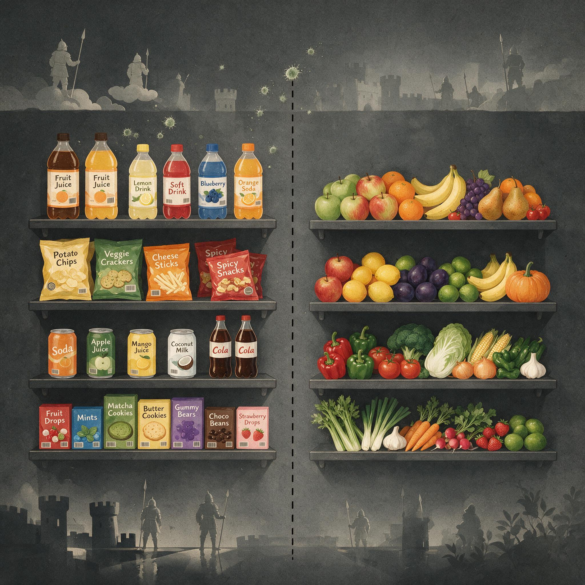

第 7 章
越抓越痒的守卫
药店的止痒货架前，总有人犹豫不决。炉甘石洗剂、薄荷脑软膏、尿素霜、抗组胺药片，花花绿绿的盒子排成几排，各自承诺着清凉、舒缓、修复。它们被摆放在最不起眼的角落，既不像退烧药那样有玻璃

超市货架上的加工食品与天然水果对比
AI 生成插图，非史实影像。
柜锁着，也不像血压计那样有人专门讲解。
痒，从来不是一件值得大张旗鼓治疗的事。真正在那排货架前停留的人才知道，一块皮肤可以痒得让人整夜睡不着，痒得能把注意力从一切重要的事情上撕下来，痒得让人用指甲把皮肤刮出细密的血痕却还是停不下手。而那盒写着“止痒”二字的软膏，在许多时候只能管用一阵子。
接下来的事情每个人都熟悉。药膏抹上去，凉意压住了灼痒，你松了口气，以为翻过这一页。可几个小时后，痒从皮肤更深的层面重新浮上来，范围似乎还扩大了一点。你再加量涂一遍，效力却比上次更短。几天后，你开始怀疑不是药膏没用，而是自己出了问题。
很少有人会在这时想到另一种可能：不是你的皮肤坏了，也不是药膏没作用，而是你身体里的那套警报系统，正在按它自己的逻辑升级。
要理解这个逻辑，得先放下一个默认的念头——痒不过是皮肤的“小麻烦”。这个判断本身，就是最典型的低估。如果把痒仅仅看作干燥或缺水造成的表面不适，那么所有关于它的讨论都只能停留在润肤霜和药膏的层面。
但痒的存在史要古老得多，也严肃得多。它不是皮肤偶然的、可有可无的抱怨，而是一套被进化保留至今的防御密令。它的职责非常具体：驱除那些贴在皮肤表面、太小太隐蔽、不足以触发痛觉却可能造成真实危害的入侵者。
试想一片远古的河岸营地。赤脚踩过湿泥，踝骨处沾上几粒淤泥。皮肤上可能有螨虫正沿着汗毛爬行，也可能有一条线虫幼虫正从水边潮湿的土壤中钻向脚趾缝。这些生物小到几乎看不见，痛觉系统对它们毫无反应——没有组织撕裂，没有明显创伤。但它们一旦在皮肤上定居，就可能传播病菌，吸食血液，产卵繁殖。身体需要的不是躺在原地保护伤口，而是在最短时间内用物理方式清除附着物。抓挠，就是这个清除动作的执行程序。
于是，一套独立的警报被演化出来：察觉到皮肤表面有可疑接触时，让宿主产生一种无法忽视的不适感，驱使他用手指去寻找那个位置，再用指甲刮过去。这个行为如此古老，以至于鱼类被寄生虫附着时也会摩擦身体，鸟类会啄羽，陆生哺乳动物会啃咬和蹬踏。它们都在执行同一个程序：有东西附着，那就把它弄掉。
在这个意义上，痒和疼痛不是程度上的差异，而是指令方向上的对立。疼痛让人缩手，保护受损组织，减少动作。痒让人伸手，制造摩擦，赶走尚在表面的威胁。一个说“别碰那里”，另一个说“去碰那里”。这两种密令之所以能长期共存，正是因为它们服务的场景完全不同。
但这套系统有一个平时不被人注意的特性：它非常敏感，而且必须敏感。在远古环境里，漏掉一次寄生虫入侵的代价可能很高。跳蚤携带的细菌可能导致斑疹伤寒，蜱虫叮咬可能传播回归热，皮肤上的钩虫幼虫可以钻进血管，在肠子里生活数年。相比之下，多抓几次无关紧要。于是，演化倾向于把瘙痒系统的阈值调得很低。
轻微的触感可以被放大为“可能有虫”的警报；一粒沙、一缕纤维、一滴汗液在汗毛间缓慢蒸发，都可能触发一次抓挠。这种宁可错报也不漏报的倾向，是瘙痒系统与生俱来的设计特性。
问题当然不在这个设计本身。问题在于设计的运行环境已经被替换了。现代人的皮肤环境与远古营地几乎没有可比性。淋浴的水流每天冲走皮肤表面的油脂和微生物，肥皂进一步清除角质层的天然屏障，空调抽走了空气中的水分，室内灰尘里飘着尘螨尸体碎屑和纺织纤维。羊毛纤维在显微镜下呈现锯齿状边缘，与昆虫附肢刮过皮肤时的刺激模式有惊人的相似。洗衣液残留的蛋白分解酶可以穿透变薄的角质层，被免疫细胞当作外来入侵者处理。冬季暖气开到二十六度，皮肤最外层的细胞因失水而收缩、开裂，释放出的微量内容物足以让表皮下的神经末梢进入戒备状态。
换句话说，同一个守卫系统，换了一片全新的巡逻区域。它拿着远古的敌情清单，在现代居室里寻找熟悉的“皮肤入侵者”。
结果找不到活生生的虱子和跳蚤，却把羊毛、灰尘、香精、干裂的皮屑统统当成了需要驱赶的对象。它们无法被抓挠清除，因为它们本来就没有固着在皮肤表面。警报因此无法解除，只会一遍又一遍拉响。
“错配”这个词，在此刻变得具体了。它不是说现代人娇气，也不是说身体出了故障，而是说环境变化的速度超过了神经回路重新校准的速度。瘙痒系统仍然按照更新世草原和热带森林里的参数运行，却面对着中央供暖、化纤衣物和每日沐浴的现代组合。守卫没有叛变，它只是迷路了。
但真正的困难还不在这里。真正的困难在于，这套系统不仅会被错误环境触发，还会被自己的反应过程强化。抓挠这个动作本身，就是问题的一部分。
指甲划过皮肤时，压力刺激了触觉神经和轻度的痛觉神经。这两类信号进入脊髓后，会通过局部回路暂时抑制瘙痒信号的传递。这就是为什么抓挠的一瞬间，痒会消退。那种短暂的舒适感不是错觉，而是脊髓里一次真实的信号拦截。
然而，同一遍指甲划过皮肤，也刮掉了最外层的角质细胞，造成了看不见的微小擦伤。受损的表皮细胞释放出更多化学警报物质，免疫细胞被召唤到现场，组胺浓度升高，微小炎症形成。这些物质反过来刺激瘙痒神经末梢，使它们的敏感度进一步上调。于是，抓挠在止痒的同时，也为下一轮更强烈的痒铺好了路。
越抓越痒，不是一句描述，而是一套正反馈回路的运行结果。到这里，我们才真正进入本章的核心：瘙痒阈值可以被改写。这个改写过程不是比喻，而是神经系统的基本能力——可塑性。
感觉神经从皮肤进入脊髓后，并不是简单地把信号转交给大脑就完事。每一级中继站都在接收大量输入，并根据输入的频率和强度调整自己的反应。当皮肤反复发痒、反复被搔抓时，脊髓中负责传递瘙痒信号的二级神经元会逐渐降低放电阈值。原本需要较强刺激才能激活的神经元，现在只要微弱的皮肤信号就能被点燃。负责压制瘙痒的抑制性中间神经元也在反复的“抓挠—炎症”循环中出现功能减退。
它们就像一支总是被忽视的消防队，渐渐地不再对“有火情”的误报做出反应。
这导致了一个反直觉的后果：即使最初触发瘙痒的刺激已经消失，高敏感状态仍然可以持续。皮肤表面的情况可能早就恢复了，但脊髓里的警报阈值已经被调到了异常低的水位。任何一点触碰、摩擦、温度变化，都会被放大成一场需要抓挠的紧急事件。
大脑的参与让这个循环更难挣脱。对慢性瘙痒者的脑成像研究显示，他们在感受到痒时，与注意力、情绪和习惯形成有关的脑区会被异常激活。这意味着痒不再只是一个感觉问题。
对痒的预期本身会加强痒的感受；对某个部位持续关注，会提高那个部位报告的刺痒强度；焦虑和失眠会进一步降低大脑对瘙痒信号的抑制能力。抓挠逐渐成为一种半自动的、难以插手的习惯——你知道接下来会更痒，但手指已经在动了。
这一刻，我们看到的不是皮肤的失败，也不是某个人意志力的失败。我们看到的是一个古老守卫系统在陌生环境中不断升级警报，直到把正常的日常感受都变成敌人。
瘙痒从防御密令变成自我维持的循环，皮肤本身可能只是第一现场，真正的改变发生在神经回路里。
有人会质疑：为什么要把它解释成演化设计？这些表现也许只是神经系统的缺陷，是进化过程中的偶然副产品，在远古环境中同样让人难受，只是古人没有留下抱怨的记录而已。
这个反驳看起来合理，但它低估了瘙痒系统的专门程度。如果痒只是神经线路的意外串扰，那么它不该拥有一套独立的受体、专门的神经纤维、固定的大脑加工区域和与抓挠行为的稳定对应。这些结构在不同的脊椎动物中反复出现，各自独立演化，却都服务于同一个目标——用机械摩擦移除皮肤表面的附着物。这种跨物种的重复，很难用“偶然缺陷”解释。它更像是一套被反复选中、反复打磨的防御程序。
正因为它是一套防御程序，而不是简单的神经短路，现代慢性瘙痒才成为一种可以理解的现象。它出问题的位置不在“有没有防御”这个根本功能上，而在“防错了目标”和“调错了灵敏度”这两个具体环节上。
错的不只是环境，还有系统根据错误反馈所做出的自我修正。这个区分很重要，因为它意味着慢性瘙痒不是无意义的病态，而是有意义的功能运行在错误的闭合回路中。
让我们回到药店那排止痒货架。抗组胺药膏能阻断一部分组胺引起的瘙痒，但对于非组胺依赖的慢性瘙痒，效果常常有限。尿素霜能修复干燥的皮肤屏障，可一旦脊髓里的阈值已经被调低，单靠修复表层往往无法让警报器安静下来。清凉剂能暂时制造一种更强烈的感觉来掩盖痒，却并不改变系统的敏感度。这些产品之所以常常让人失望，正是因为它们大多在皮肤层面工作，而慢性瘙痒的主要改变，发生在从脊髓到大脑的信号通路上。
至于这套已经调高的阈值能不能被调回去，科学现在能给出的回答是：原理上可以，操作上还很难。神经可塑性是一把双刃剑，它既能让系统变得过度敏感，也能让它在足够持久的正确反馈下慢慢恢复。但问题在于，慢性的“痒—抓—更痒”循环本身就是一种持续的错误反馈。
一个人只要还在每天抓挠，他的神经系统接收到的信息就是：“警报有效，威胁仍在，继续上调。”要打破这个循环，他必须在最痒的时刻停止抓挠，用与本能完全相反的行动，去修改那条已经被加固的神经回路。
这不是一个关于意志力的简单建议。对慢性瘙痒者来说，不抓的难受是真实的，抓后的恶化也是真实的。他面对的不是软膏说明书上的选择题，而是一套比他有意识决定更古老的密令系统在发号施令。那个系统不知道皮肤上已经没有寄生虫了，它只知道警报响过很多次，所以下次要更响。
最后一层困难，来自我们并不完全理解的大脑整合机制。为什么有些人在同样的皮肤刺激下只感到轻微不适，另一些人却发展到无法入睡？为什么心理预期能如此强烈地改变痒感的强度？为什么瘙痒有时会在没有皮肤病变的情况下持续数年？这些问题牵涉的是感觉信号、情绪记忆、习惯形成和注意网络之间的复杂对话。科学还没有把这段对话的完整语法整理清楚。我们知道的，是这些环节都在参与；
在瘙痒这件事上，皮肤科诊室和神经科学实验室之间的对话，直到最近二十年才真正接通。在此之前，两边各自掌握着一部分真相，却很难拼到一起。
皮肤科医生在显微镜下看到的是角质层缺损、肥大细胞聚集、炎症因子浓度升高。他们手里的工具是外用激素、保湿剂和免疫调节剂，治疗逻辑建立在“修复皮肤屏障”和“抑制局部炎症”这两根支柱上。这套逻辑对湿疹、荨麻疹、接触性皮炎确实有效，但面对那些皮肤看起来基本正常、病人却痒得无法入睡的病例，它就卡住了。
神经科学家则在脊髓切片和脑功能成像中看到了另一幅图景：瘙痒信号的传递不依赖组胺这一条通路，还存在多条非组胺依赖的并行通路；脊髓背角的胃泌素释放肽受体神经元专门负责传递痒信号，与传递痛信号的神经元在解剖上分离；中枢神经系统里，前扣带回、岛叶、前额叶皮层和纹状体在慢性瘙痒者中被异常激活，形成了一个类似成瘾和强迫行为的神经回路模式。
这两套知识长期各自运转，直到有人问出了一个关键问题：如果慢性瘙痒的主要病变位置不在皮肤，而是在神经通路的可塑性改变上，那么皮肤科的治疗为什么一直在皮肤层面打转？
这个问题的提出，把瘙痒从“皮肤病”的范畴里拽了出来，重新归类为“神经感觉系统的功能失调”。
这不是一个简单的标签更换。它意味着治疗的目标不应该只是让皮肤表面恢复正常，而应该是让那条已经被调低阈值的神经通路重新校准。
但校准的难度在于，神经可塑性一旦在错误的方向上被加固，它本身就变成了维持疾病的力量。每一次抓挠都在向脊髓和大脑发送一个确认信号：警报没有误报，威胁真实存在。这个确认信号不是抽象的心理暗示，而是实实在在的动作电位，沿着外周神经传入脊髓，激活二级神经元，触发突触前的神经递质释放，强化突触连接。重复成千上万次之后，这条通路的传导效率被永久性地提高了。用神经科学的术语说，发生了长时程增强。
这个词通常出现在学习和记忆的研究中，描述的是海马体神经元在反复刺激后对相同输入产生更强反应的现象。但同样的细胞机制也发生在瘙痒通路里。脊髓里的痒神经元也在“学习”，它们学到的是：皮肤表面总是有危险，必须把警报阈值维持在极低水平。
这个类比不是修辞上的点缀，而是有实验证据支持的。动物模型显示，在反复施加瘙痒刺激后，脊髓背角神经元的自发放电频率显著增加，对阈下刺激的反应也被放大。即使停止施加原始刺激，这种高兴奋性状态仍可持续数周。用光遗传学技术精确激活小鼠脊髓中的痒神经元，可以诱发出剧烈的抓挠行为；而抑制同一群神经元，则能显著减轻慢性瘙痒模型中的抓挠频率。
这些实验告诉我们两件事。第一，瘙痒不是皮肤感觉的被动传递，而是中枢神经系统主动建构的感知体验。第二，一旦中枢的建构模式被改写，皮肤层面的治疗就如同试图通过修复话筒来消除扩音器里的啸叫——你处理的是输入端，但问题出在放大回路里。
这就引出了一个更深层的演化悖论。如果慢性瘙痒在现代环境中如此普遍，且对生存毫无益处，为什么自然选择没有淘汰掉这种容易过度敏感的系统？答案可能藏在瘙痒系统原本的工作环境里。
在更新世，皮肤寄生虫的威胁是持续存在的，而不是偶发的。一个人可能终其一生都在与虱子、跳蚤、螨虫和各类线虫打交道。在这种条件下，瘙痒系统被频繁触发是常态，但触发的原因几乎总是真实存在的寄生虫。抓挠之后，寄生虫被移除，警报解除，系统回到基线。即便偶尔出现误报——比如一片草叶划过皮肤——误报的代价不过是一次多余的抓挠，而漏报的代价可能是感染和死亡。
在这种成本收益结构下，演化自然会选择高敏感度、低特异性的警报策略。换句话说，这套系统在设计之初就没有被要求精确区分“真寄生虫”和“像寄生虫的刺激”。它只需要对一切可疑的皮肤接触保持警惕，宁可错报一千，不可漏过一个。
这个策略在更新世运行了上百万年，没有出现系统性问题。因为环境中真实的威胁足够多，误报的比例被稀释到了一个可以接受的水平。真正的问题出现在最近一百年。当人类用肥皂、热水和消毒剂把皮肤表面的寄生虫几乎清除干净之后，瘙痒系统突然失去了它原本的目标。
但系统本身并没有因此关闭，它仍然在巡逻，仍然在按照更新世的参数扫描皮肤表面。它找不到活虫，就开始对一切与虫体触感相似的刺激做出反应。羊毛纤维的锯齿边缘、尘螨尸体的蛋白碎片、干燥空气中飘落的皮屑、合成纤维摩擦产生的静电——这些刺激在物理形态或化学性质上与寄生虫残留物有足够的相似性，足以触发那套从未进化出“关闭”开关的警报系统。
我们不知道的，是它们各自贡献多大、如何相互作用。承认这一点，并不是承认失败，而是看清楚慢性瘙痒之所以顽固的原因：它同时涉及皮肤、脊髓、大脑和来自环境的大量输入，任何单一层面的解释都只是故事的一部分。多年以前，治疗瘙痒的医生会把难治的病例称为“神经官能症”，认为问题出在病人脑子里。
后来的研究表明，这种说法只对了一小部分——问题确实涉及大脑，但大脑并不是凭空产生痒感，它是在处理由皮肤和脊髓传来的、已被放大和扭曲的信号。把责任推给“脑子”和把责任推给“皮肤”一样，都是对系统的误读。瘙痒不是某个器官的故障，而是一整条通路在错误经验中完成了重新编程。
现在我们可以回答开头那个在货架前犹豫的人没有说出口的问题了：为什么越抓越痒？答案不是“你抓得太用力”，也不是“你的皮肤太干”。答案是：你身体里的那个古老守卫，本来该在寄生虫爬过时鸣笛，而今却把一切轻微的皮肤事件都当成了偷袭。它每一次被你的抓挠强化，都更加确信自己判断正确。
于是它把阈门拧得更低，把回路记得更牢，准备在下一次更早发出警报。它的勤勉曾让你的祖先在河边和草丛间活下来，如今却让一个坐在恒温房间里的人整夜与自己的手臂搏斗。守卫没有发现自己已经不在森林里，而它的密令从未更新过。